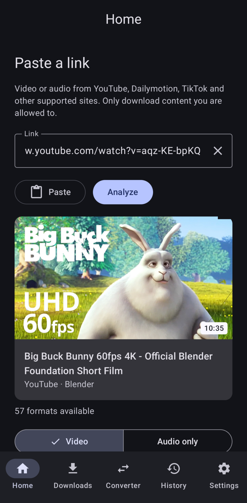
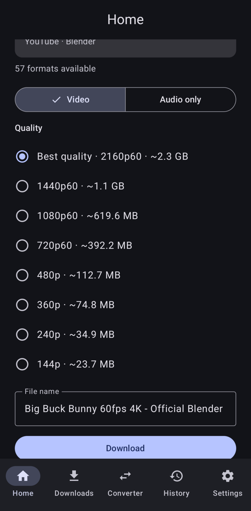
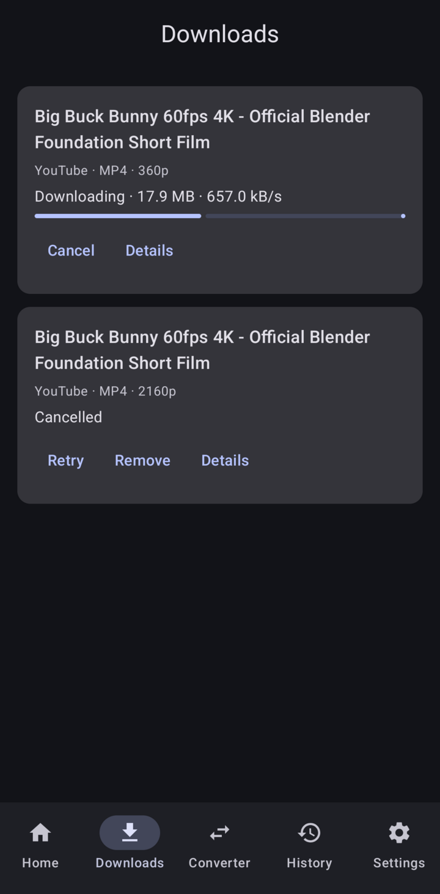
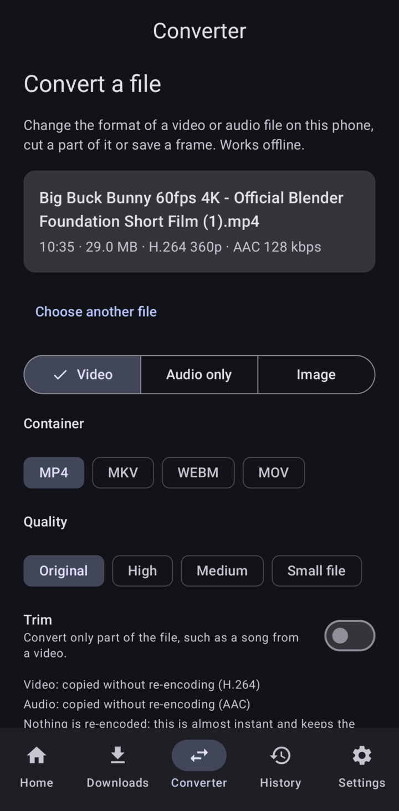
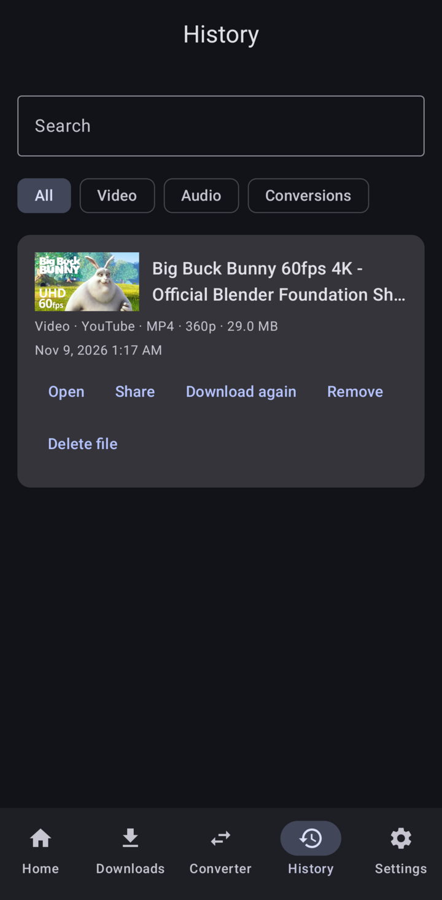
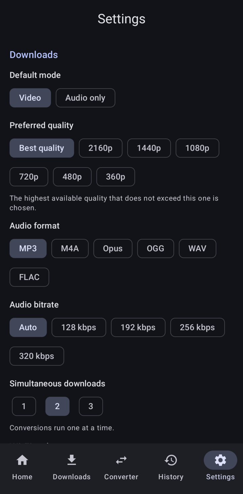

Download and convert media, right on your phone.
MediaForge saves video and audio from the sites you use, and converts your own files. Everything runs on the device: no servers, no accounts, no ads.

What it does
MediaForge shows the formats each site really offers, with their sizes, so you choose before you download. Then it saves the file where you want it.
Video in the quality you pick
From 144p to 4K, in MP4. Paste a link or share it from any app.
Audio only
MP3, M4A, Opus, OGG, WAV or FLAC, with title, artist and cover art. Copied without re-encoding when possible.
Offline converter
Change formats, trim a clip, save a frame as an image, compress a video or convert up to 50 files at once.
Subtitles and playlists
Embed subtitles in the video. Pick videos from a public playlist and download them all.
Background queue
Real progress, cancel, automatic retries and a Wi‑Fi‑only option. A searchable history of everything you saved.
Private and up to date
No analytics, no Google services. The download engine updates itself, verified by signature.
Screenshots
Real screens from version 1.0.0.






Install
- Download app-arm64-v8a-release.apk on your phone. For Chromebooks and x86 devices, get the
x86_64APK from the release page. - Open it. Android asks you to allow installs from your browser or file manager.
- On first launch the app unpacks its engine (about 240 MB); it takes a few seconds.
To check the APK is genuine, compare it with SHA256SUMS in the release. Signing certificate (SHA-256):
69:EE:90:B0:22:F6:9E:59:D9:0F:6A:B3:AE:07:FA:96:87:75:43:39:88:66:67:8B:FB:33:47:E5:BC:1F:32:1A
Requirements
- Android 8.0 or later
- An arm64 phone (almost all of them) or an x86_64 device
- About 400 MB of free space
Tested sites
YouTube, Dailymotion and TikTok. Other sites supported by yt-dlp may work.
Built with
Clean architecture with a pure Kotlin domain, a background job queue, and native engines run as processes. Tested with unit and on-device tests. See the development guide.
Legal
Use it for content you are allowed to download: content you own, content in the public domain, or content that the platform and the rights holders allow you to save. MediaForge does not bypass DRM, paywalls, logins or other access controls, and it doesn't remove watermarks. You are responsible for how you use it.
Licenses: MediaForge is free software under the GNU GPL v3.0. It includes yt-dlp (Unlicense), Python (PSF), QuickJS (MIT) and FFmpeg with GPL components, among about 140 libraries. Their notices are in the app (Settings → Open source licenses) and in LICENSES.md. Each release includes the corresponding source of the GPL, LGPL and MPL components.
Privacy: the app has no accounts, analytics or ads. It only connects to the sites you ask it to, and to GitHub to update its download engine.